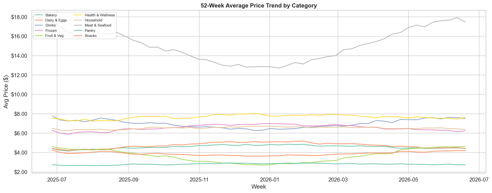
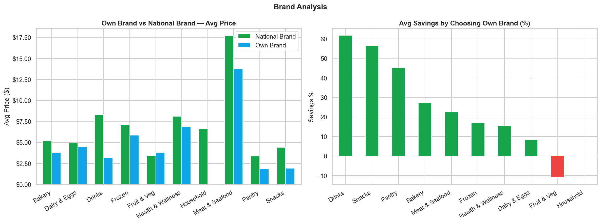
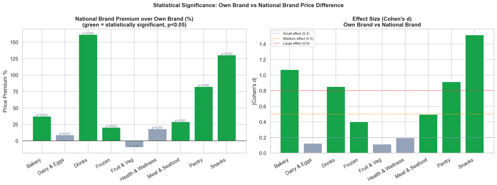
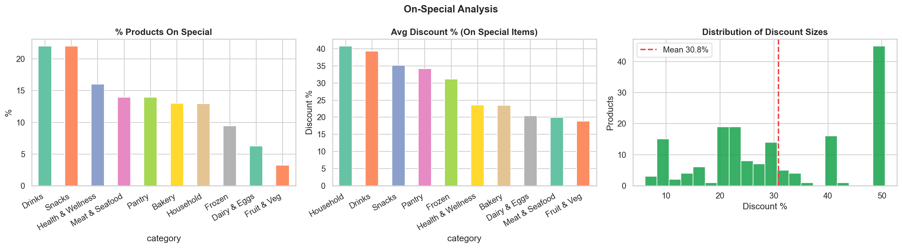
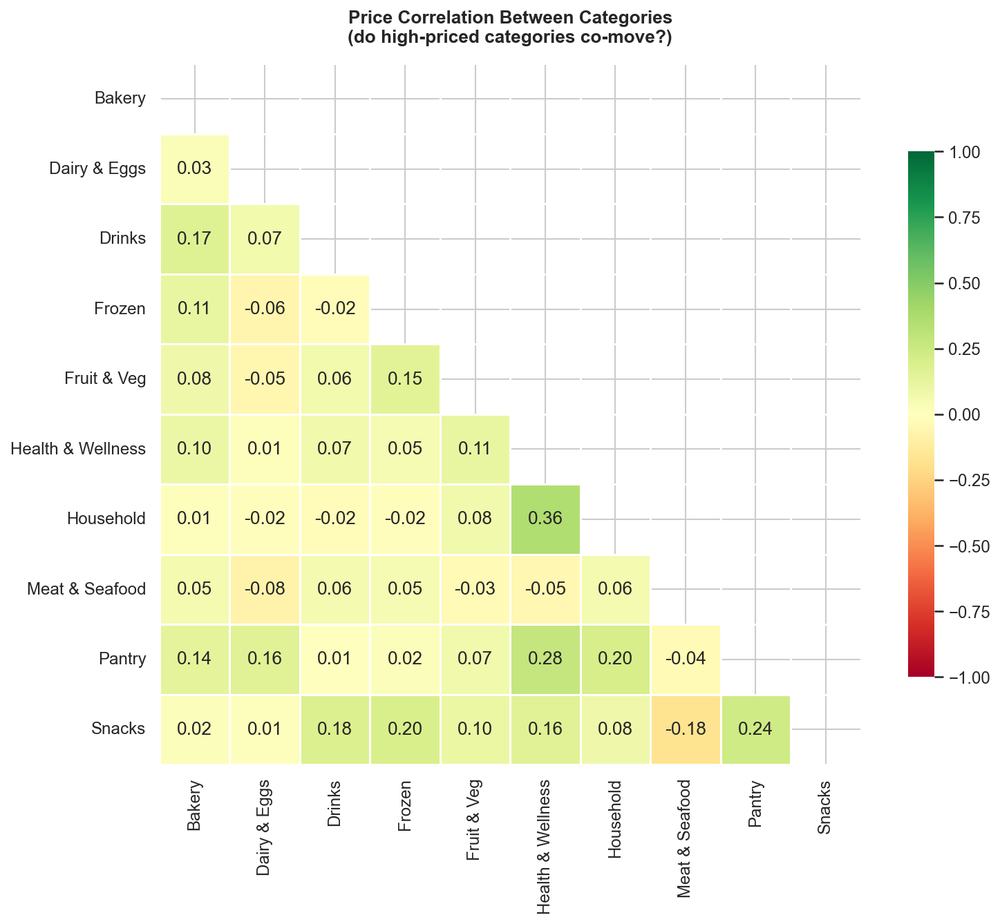
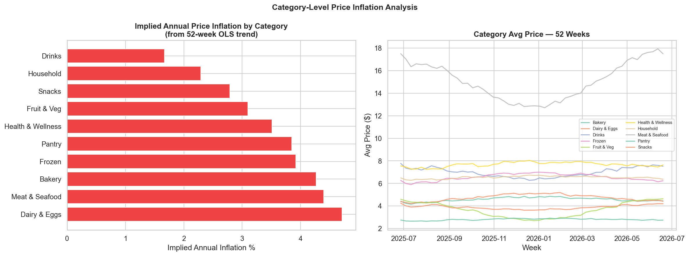

A data analytics project on Australian supermarket pricing — web scraping, SQL, exploratory analysis, forecasting, and interactive dashboards, built on 1,275 real Woolworths products.
How the project turns 1,275 supermarket products into answers a shopper, category manager, or pricing analyst can act on.
Statistical analysis across 1,275 products revealing real pricing patterns in the Australian grocery market.
From distribution analysis to statistical hypothesis testing — every chart tells a story about Australian grocery pricing.






A four-view interactive dashboard built in Tableau Public — category price overview, 52-week trends, brand premium, and a product-level value finder. Click any category to highlight it across every chart.
Every layer of the pipeline uses tools that appear in data analyst and ML engineer job descriptions.
12 production-ready SQL queries answering real business questions about pricing, promotions, and value.
SELECT category, CASE WHEN LOWER(COALESCE(brand,'')) LIKE '%woolworths%' OR brand IS NULL THEN 'Own Brand' ELSE 'National Brand' END AS brand_type, COUNT(*) AS product_count, ROUND(AVG(price), 2) AS avg_price, ROUND(100.0 * SUM(is_on_special) / COUNT(*), 1) AS special_pct FROM products WHERE scraped_at = (SELECT MAX(scraped_at) FROM products) GROUP BY category, brand_type ORDER BY category, brand_type;
SELECT name, brand, category, price, was_price, discount_pct, unit_size FROM products WHERE is_on_special = 1 AND scraped_at = (SELECT MAX(scraped_at) FROM products) ORDER BY discount_pct DESC LIMIT 25;
SELECT p.name, p.category, ROUND(h.avg_price, 2) AS hist_avg, ROUND(h.price_std, 2) AS std_dev, ROUND(100.0 * h.price_std / h.avg_price, 1) AS cv_pct FROM products p JOIN ( SELECT product_id, AVG(price) AS avg_price, SQRT(AVG(price*price) - AVG(price)*AVG(price)) AS price_std FROM price_history_weekly GROUP BY product_id ) h ON p.product_id = h.product_id ORDER BY cv_pct DESC LIMIT 20;
SELECT week_date, category, ROUND( 100.0 * SUM(is_on_special) / COUNT(*), 1 ) AS special_pct, COUNT(*) AS products_tracked FROM price_history_weekly GROUP BY week_date, category ORDER BY week_date, category;
7 interactive tabs — product explorer, category analysis, deals tracker, best value finder, price trends, and 8-week forecast.